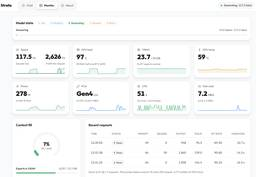
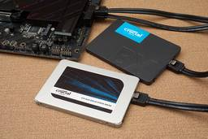
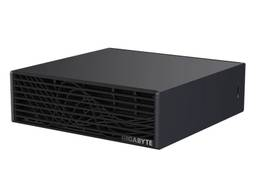
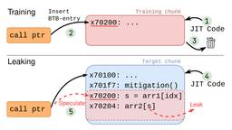

直近1週間の人気フィード
はてなブックマーク数を元に新着優先で並べ替え

Qwen3.8-Flash-NextがゲーミングPCで爆速に動く「Strata」登場 61
61 PC Watch
PC Watch
総パラメータ125B(1,250億)、アクティブパラメータ6B(60億)の大規模モデルが、ビデオカード1枚のゲーミングPCで秒間60～95トークンの速度で動く。開発者のNiko1221氏は、Alibabaの大規模言語モデル「Qwen3.8-Flash-Next」をコンシューマ向けPCで高速に実行するための推論エンジン「Strata」をGitHubで公開している。ライセンスはMIT。
2日前
テキストを生成しない爆速AI「意思決定モデル」が続々。Clefなど3本まとめ 44 PC Watch
テキストを1トークンも生成せず、分類やルーティングといった判断だけを高速に返す「意思決定モデル」が、にわかに盛り上がりを見せている。Typesafe AIの「Jev」が火付け役となったこのジャンルに、互換モデルや対応実装が相次いで登場した。
1日前

【今すぐ読みたい！人気記事】お荷物になってしまった240GB等の小SSDたち。実は“記憶域スペース”で大容量化可能。余ったSSDの有効活用方法とは - PC Watch 17 PC Watch
昔からSSDを使っている人なら、240GBクラスの小容量モデルを複数持て余していたりするかもしれない。USB接続の外付けケースと組み合わせて、ちょっとしたデータ保存用に使うのもよいが、ゲームのインストール目的だと容量不足感は否めない。
20時間前

メモリ64GB版「DGX Spark」登場。4,999ドルで、128GB版は値上げ 22 PC Watch
NVIDIAは10月2日(現地時間)、デスクトップAIコンピュータ「DGX Spark」のメモリ容量を64GBに抑えた「DGX Spark 64GB」を発表した。10月23日より発売し、価格は4,999ドル(約79万円)から。
1日前

東京が3億円で電気をかき集めた夏、カリフォルニアは家の蓄電池を束ねて乗り切った 7 ギズモード・ジャパン
ギズモード・ジャパン
去る9月9日の夕方、カリフォルニア。気温はぐんぐん上がり、エアコンがいっせいに唸りだす時間帯です。そのとき、14万軒のガレージで、壁に備え付けられた蓄電池がじわっと放電を始めました。合計580MW（58万kW）。ガス火力の発電所2〜3基ぶん…
9時間前

rootハッシュ漏洩の脅威。JITを狙うSpectre-v2新手法「BTR」とは 4 PC Watch
CPUの投機実行における脆弱性「Spectre-v2」の亜種である「Branch Target Reuse(BTR)」が報告された。アムステルダム自由大学のセキュリティ研究チームであるVUSecが9月29日に発表したもので、JIT(Just-in-Time)コンパイラに対して悪用することで、機密データの窃取などを可能にするとしている。
2日前
Kindleラインナップ刷新！全モデルフラット前面で薄型化。2万9,980円から 3 PC Watch
電子書籍リーダーのKindleが、全モデル揃って段差のないフラットな前面デザインに生まれ変わった。Amazonは10月1日、Kindleシリーズ4モデルと子ども向け2モデルを刷新し、同日より順次発売する。価格は2万9,980円からで、発売日は以下の通り。
2日前